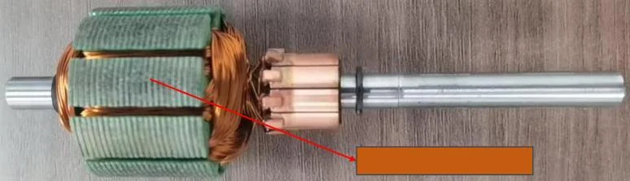
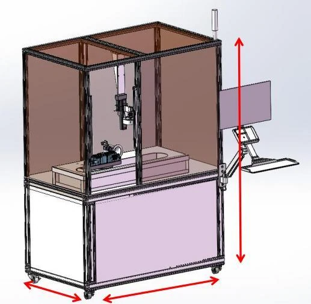
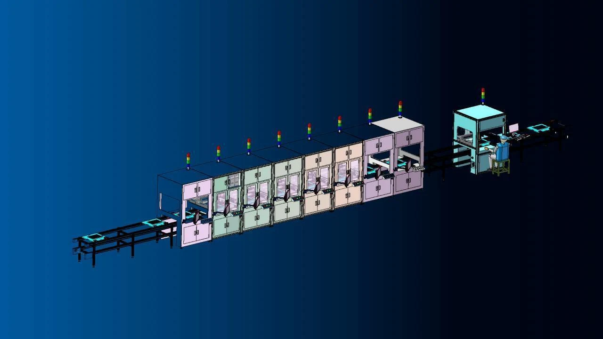

01
转子外观 AI 检测
旋转拍摄完整表面，AI 定位缺陷并完成合格/不合格分流。

融合工业相机、精密光学、运动控制与深度学习，完成缺陷定位、尺寸与外观检查、OK/NG 判断及结果回传。
VISION APPLICATIONS
从单机外观检测到多站全流程测试，根据产品特征设计光学、机构与算法。

旋转拍摄完整表面，AI 定位缺陷并完成合格/不合格分流。

精密模组与伺服转台组合，覆盖产品顶部及四周。

触控、白平衡、亮度、画质、音频与功率测试结果回传。
VISION STACK
算法只是系统的一部分，稳定成像、精密运动和工艺理解同样关键。
工业相机、定焦镜头与定制光源突出缺陷特征，提升对比度并减少环境光干扰。
X/Y/Z 模组、旋转平台与仿形治具配合，覆盖复杂表面和不同产品规格。
训练缺陷特征，实现检测、定位、分类和持续优化。
结果、图像和流程信息可回传制造系统，支撑追溯和工艺改进。
SOFTWARE & MACHINE
缺陷位置可视化、OK/NG 判断、自动分流与结果记录形成闭环。
AI 缺陷定位VISION PROJECT
建议同时提供缺陷类型、尺寸、节拍、现场光环境和当前检验标准。